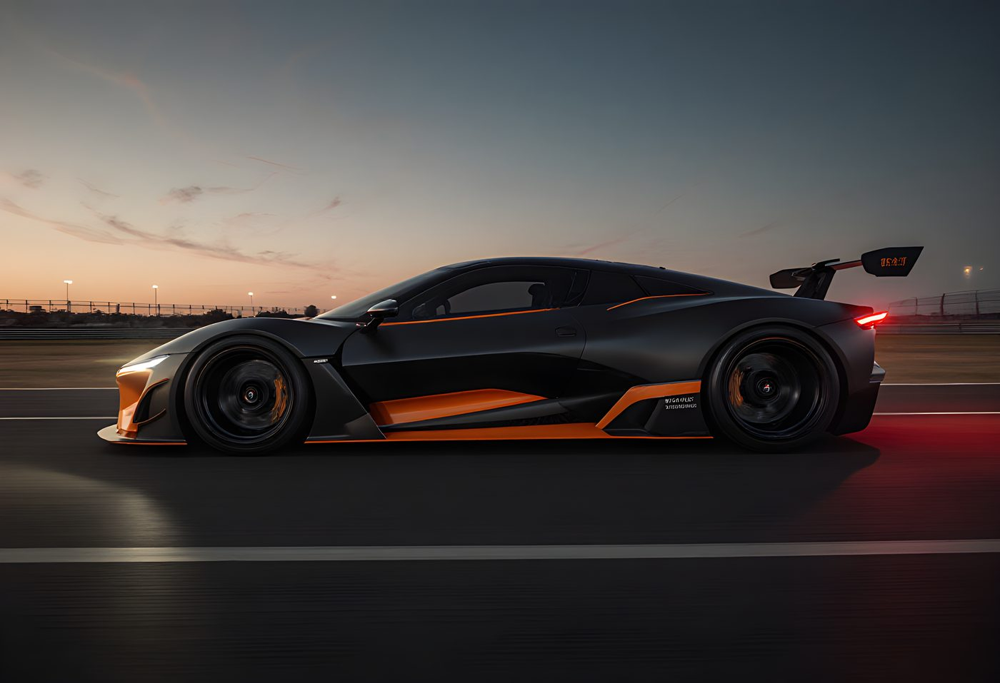
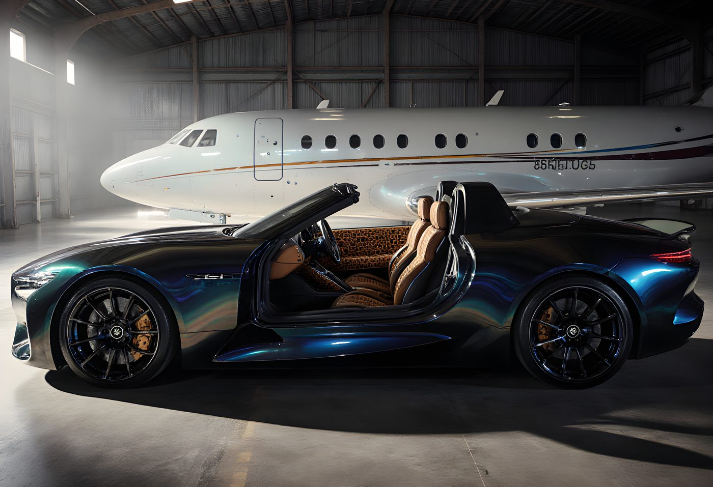
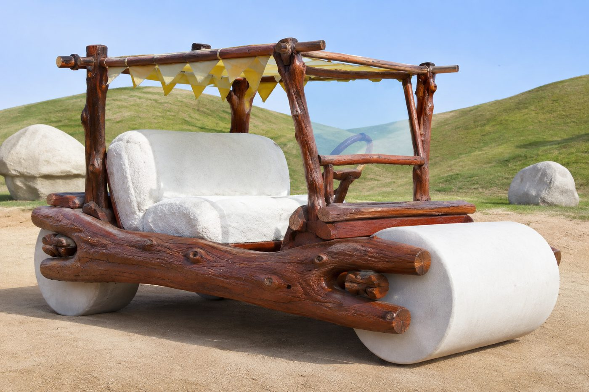
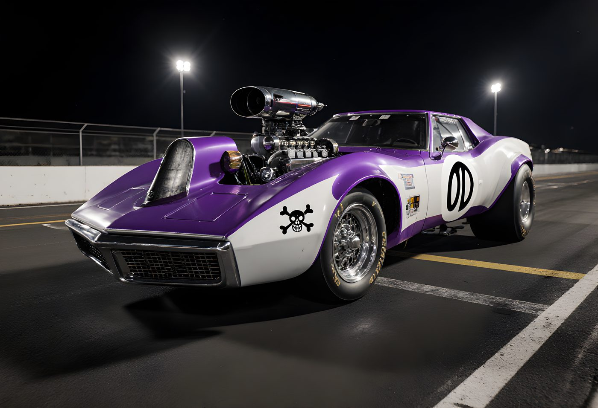
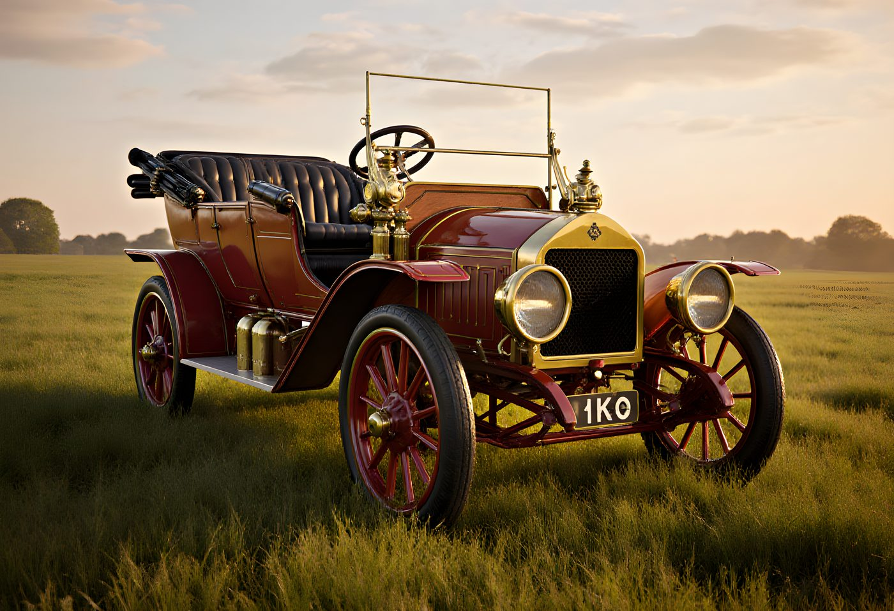
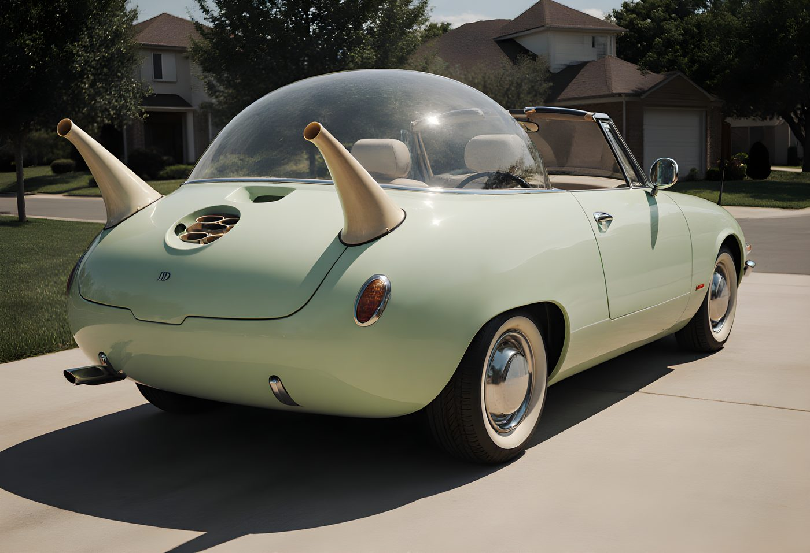
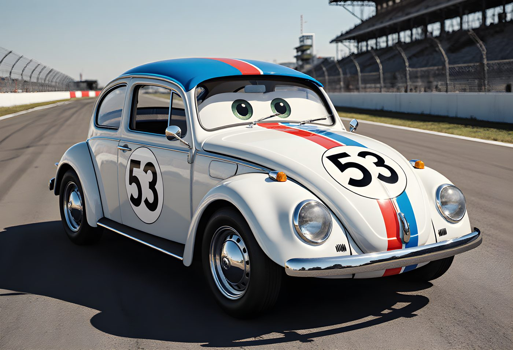

The rule is simple: it had to have been for sale. Not a concept, not a one-off show car, not a rendering somebody's marketing department leaked. If a dealership somewhere, at some point, could hand an actual customer the keys, it qualifies. Twelve records, twelve real production cars, arranged in six axes — because every extreme is more interesting standing right next to its opposite.

Yangwang U9 Xtreme
On 14 September 2025 this thing hit 308.4 mph on a test track in Papenburg, Germany — the highest verified speed any production car has ever run, electric or otherwise. It knocked the Bugatti Chiron Super Sport 300+ off a throne that had stood since 2019. Four motors, one built into each wheel, pushing just under 3,000 horsepower through a 1,200-volt system built for exactly this. BYD is building thirty.
.jpg)
Peel P50
A 60kg fibreglass shoebox built to carry one adult and one bag of shopping. The 1962 original topped out around 37mph; the version still being built today — yes, it's still in production — caps out nearer 28mph. Nothing wearing a number plate has ever been officially recorded slower. (It also turns out to be the smallest car ever made — see the Size axis below.)

Bugatti Royale (Type 41)
Six were built; only three ever found a buyer. The Royale is over 20% longer than a Rolls-Royce Phantom, riding on a 4.3m wheelbase and carrying a straight-eight so large a single cylinder head weighs more than most entire engines on this page — bar the Veyron's.
.jpg)
Peel P50
The same car holding the slowest crown, above, also holds the smallest — officially the tiniest production car ever made, per Guinness. It's shorter than most adult humans are tall, and weighs about the same as the average fridge.

Bugatti Veyron / Chiron
The W16 is two V8s bolted together at 90 degrees, fed by four turbochargers and cooled by ten separate radiators. Just the engine takes more than 3,500 hand-fitted parts before it's bolted to anything else. Two decades on, it's still the benchmark for how complicated a road car is legally allowed to be.

Citroën 2CV
Citroën's actual 1930s brief: build something that can carry a farmer, his wife, and a basket of eggs across a ploughed field at 50km/h — without breaking a single egg — on no more than 3 litres of fuel per 100km. The result was an air-cooled twin with barely a gasket in it, universally nicknamed "an umbrella on wheels." It stayed in production, largely unbothered by the rest of the automotive industry, until 1990.

Rolls-Royce La Rose Noire Droptail
Rolls-Royce's Coachbuild programme builds a handful of these a year, each one bespoke down to the wood. This one's interior alone uses a 1,603-piece sycamore parquetry floor and paint that shifts colour depending on the angle you catch it. Currently the highest price a manufacturer will actually sell you a new car for.

Tata Nano
Launched in 2008, the base Nano shipped with no power steering, no airbags, no air-con, no radio, and — depending who you ask — no power brakes either. It did the one job it was built for: put four wheels within reach of people who'd never owned a car before. Production ended in 2018.
_sedan.jpg)
Toyota Corolla
Somewhere on the planet, a new Corolla leaves a dealership roughly every 28 seconds. Toyota passed fifty million sold back in 2021 and hasn't stopped counting since — more than any other nameplate in automotive history, across twelve generations built on four continents. Its secret was never excitement. It was being the car the fewest people ever regretted buying.

McLaren F1
Sixty-four road cars, a handful of GTR racers, five LMs, two GTs, and a few prototypes — 106 examples, total, forever. Central driving seat, a gold-lined engine bay (gold reflects heat better than anything cheaper), and a new price that started around $815,000 and only ever moved one direction from there. Nobody is building a 107th.
.jpg)
Dodge Challenger 426 Hemi
A 425-horsepower 7.0-litre V8 built for the quarter mile, not the commute, and it showed at the pumps: roughly 6.7 miles to the gallon, tested the old-fashioned way — foot flat to the floor. Nothing sold new since has been recorded thirstier. Still, by a wide margin, the least economical legal way two people have ever gone to the shops.

Volkswagen XL1
Wing mirrors were replaced with cameras. The rear wheels wear covers. The whole shape exists purely to argue with the air as little as possible. The result, officially, was 0.9 litres per 100km — 261mpg in old money — a figure no production car has matched since. Volkswagen built 250, sold 200, and quietly proved a diesel-electric hybrid could out-frugal a bicycle courier.
And for the famous fictional cars that never had to worry about being real, passing an emissions test, or staying on the road for longer than a chase scene — rendered as if they actually rolled off a real production line:

The Flintstones' Car
Stone chassis, log wheels, no floor — the engine was always Fred's own two feet.

The Mean Machine — Wacky Races
Dick Dastardly's car, built for exactly one purpose: winning, by any means, several of them illegal.

Chitty Chitty Bang Bang
Brass, wood, and a healthy disregard for aerodynamics — the only car here that's also a boat and a plane.

The Homer — The Simpsons
Designed by a target market of exactly one father, featuring three horns and a bowling-ball holder nobody asked for.
The Mystery Machine — Scooby-Doo
Would've gotten away with it too, if it weren't for this van's paint job giving away its location from three streets over.

Herbie — The Love Bug
More personality than its driver, and — most weeks — a better finishing record too.